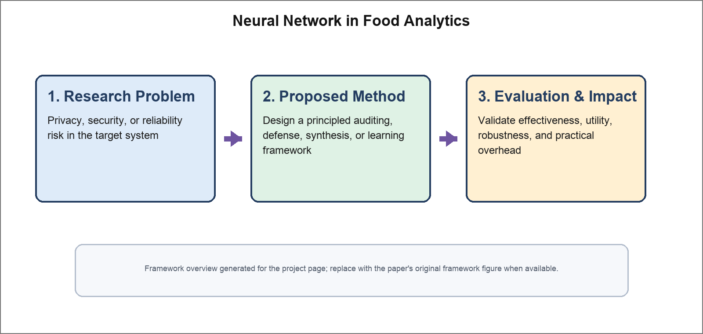

Neural Network in Food Analytics
Food Science and Nutrition, 2022

Abstract
Artificial neural networks (ANNs) are among the machine learning algorithms inspired by the operation and architecture of biological neural networks and are increasingly used in food science. This review summarizes recent advances and applications of ANNs in food analytics, with emphasis on ingredient and nutrient prediction, quality and safety assessment, and process optimization. We discuss representative network structures, data modalities, evaluation protocols, and practical deployment considerations in food systems. The review also highlights current limitations and future opportunities for robust, interpretable, and scalable ANN-based food analytics.
Resources
Citation
@inproceedings{MZJPZTWLW22,
author = {Peihua Ma and Zhikun Zhang and Xiaoxue Jia and Xiaoke Peng and Zhi Zhang and Kevin Tarwa and Cheng-I Wei and Fuguo Liu and Qin Wang},
title = {{Neural Network in Food Analytics}},
booktitle = {{Food Science and Nutrition}},
publisher = {Wiley},
year = {2022},
}